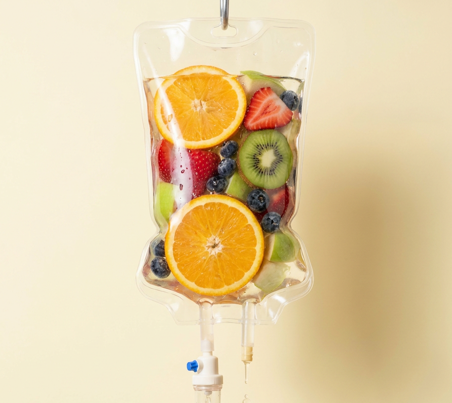

Doctor-prescribed IV vitamin and mineral therapy in our calm Umhlanga lounge. 100% bioavailability, comfortable recliners, 30–60 minute sessions.
Oral vitamins are wonderful but absorption depends on a lot of things going right in your gut. IV therapy bypasses digestion entirely, delivering nutrients straight to the cells that need them. The result: faster effect, higher dose, real, measurable replenishment.
Every drip at WellMed is prescribed by Dr Moodley after a brief consult never just sold off a menu. We blend for what your body actually needs.

Every drip is still prescribed after a brief consult — but here's the menu, so you know what to expect.